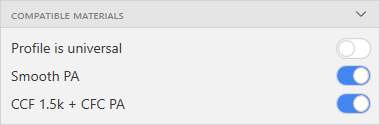

Новая концепция работы с проектами
При открытии проекта настройки, содержащиеся в нем, больше не сохраняются в библиотеку настроек автоматически, а импортируются как временные. Временные настройки могут использоваться для слайсинга так же, как и настройки из библиотеки, но они будут очищены при создании нового проекта, открытии другого проекта, перезапуске программы. Временные настройки всегда находятся в начале списка настроек на соответствующей панели (принтеров, материалов, профилей). Временные настройки можно сохранить в библиотеку, нажав на кнопку сохранения. В этом случае пользовательские настройки из проекта будут добавлены в библиотеку, а для встроенных в Ауру настроек будут перезаписаны переопределения.
Переопределение настроек
Каждый параметр в настройках материалов, профилей, принтеров теперь можно переопределять, сбрасывать и сохранять. При изменении параметра он становится переопределенным. При слайсинге используются переопределенные параметры. Переопределения сохраняются при перезапуске программы. Переопределять можно все настройки, включая встроенные в Ауру настройки, помеченные индексом AP. Переопределенное значение можно сбросить к исходному (базовому) значению. Также, если настрока является пользовательской (без индекса AP), то переопределенные значения параметров можно cохранить, обновив базовые.

Совместимость профилей с материалами
Для профилей добавлена возможность указывать совместимые с ним материалы (пластики и композиты). Также профиль может быть универсальным - совместимым с любыми материалами. На панели Slicing в списке профилей отображаются только те профили, которые совместимы с выбранными материалами. Все профили из Ауры 1.x импортируются как универсальные.
Настройки композита вместо настроек волокна
Настройки волокон заменены на настройки композитов. Композит - это комбинация волокна и пластика. В настройки композита вошли все настройки пластика, которые используются в композитной печати, например, температуры печати, скорости обдува и т.д. При импорте проекта Ауры 1.х композит создается автоматически для комбинации волокна и пластика в композитном экструдере. При импорте отдельно настроек волокна из Ауры 1.х для всех настроек, связанных с пластиком, устанавливаются в настройки по умолчанию.
Новая система слотов и экструдеров в принтерах
Каждый принтер теперь имеет список слотов под экструдеры и список экструдеров, которые могут устанавливаться в слоты. При слайсинге на панели Slicing можно выбрать какие именно экструдеры установлены в слоты. Для слота задается индекс инструмента и тип экструдера, который можно установить в этот слот (пластиковый, композитный или любой). Принтеры Composer A4, A3 имеют 2 слота - слот 0 (пластиковый) и слот 1 (композитный). В слот 0 могут быть установлены пластиковые экструдеры с различными диаметрами сопел. Для слота 1 сейчас доступен только один композитный экструдер. Принтер PROM IS 500 имеет 4 универсальных слота, в которых могут быть установлены различные экструдеры (высокотемпературные и низкотемпературные пластиковые экструдеры с различными диаметрами сопел, композитные экструдеры для различных размеров армирующих волокон).

Новые форматы проектов и файлов настроек
Новый формат проектов имеет расширение .auprojx. Проекты старого формата (.auproj) могут быть открыты в новой версии Ауры, сохранение осуществляется только в новом формате. Файлы настроек (материалов, профилей, принтеров) также имеют новый формат. Настройки старого формата могут быть импортированы, экспорт осуществляется только в новый формат.